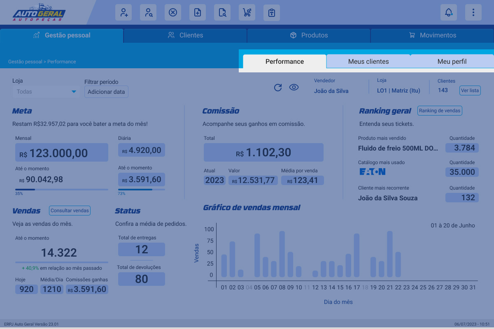
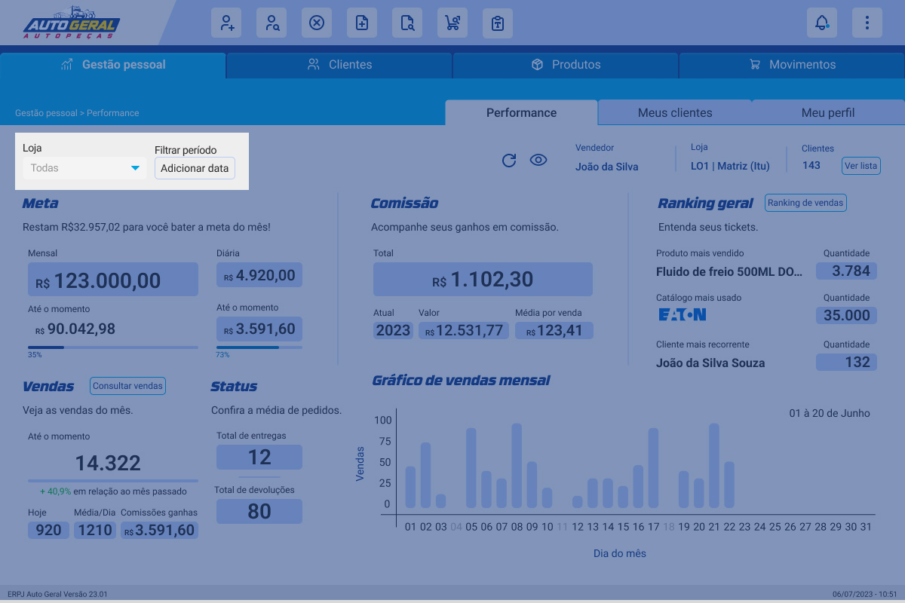
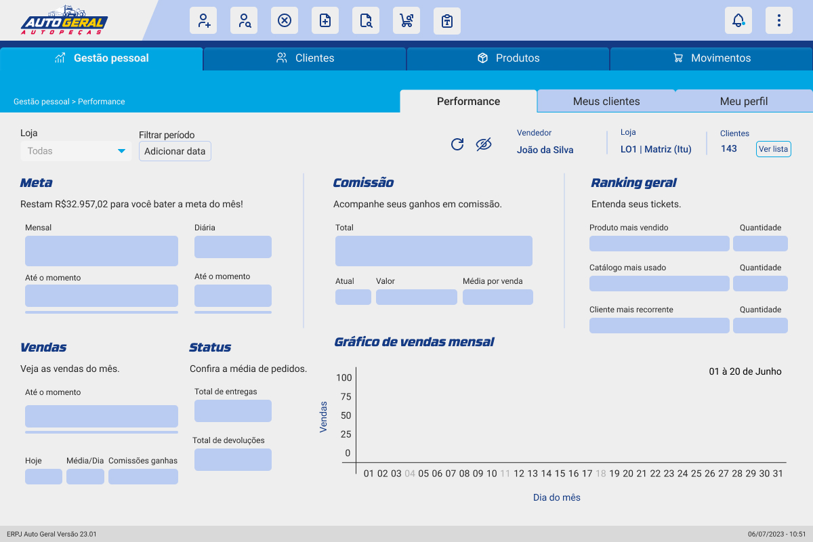
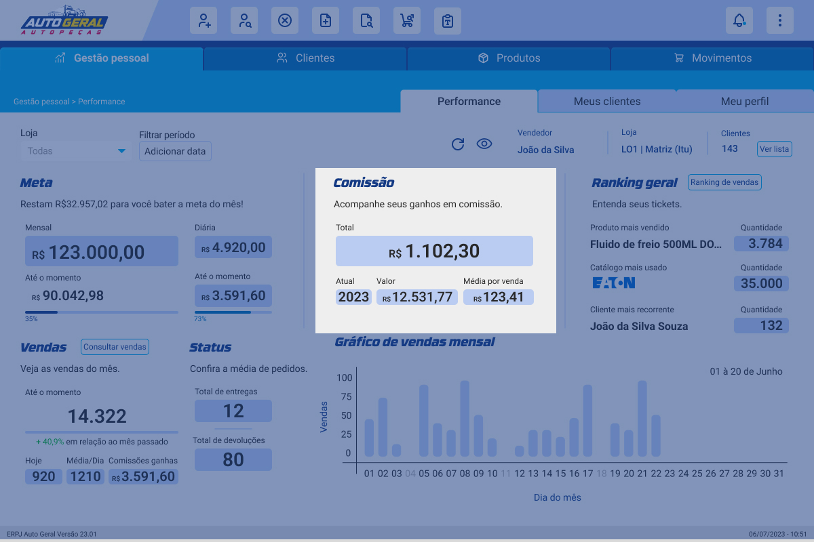
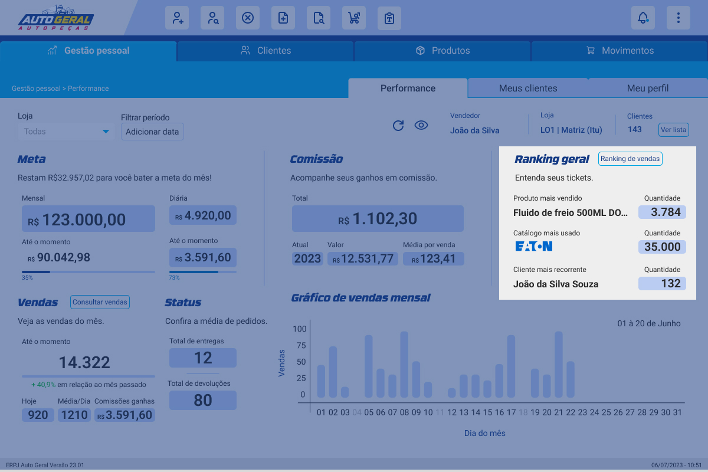
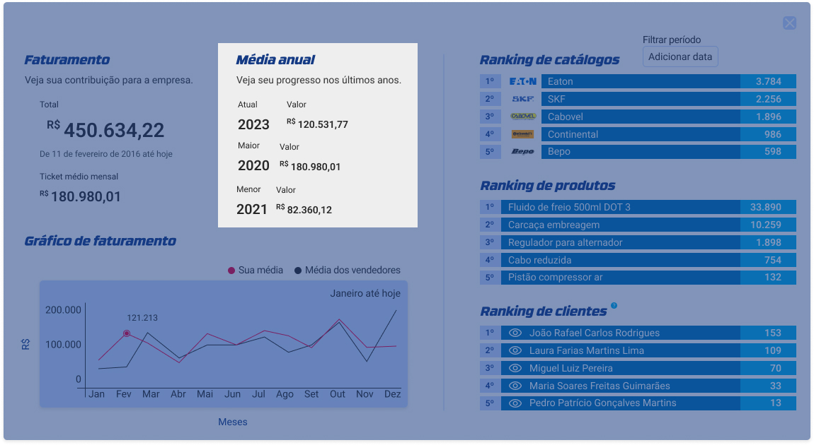

Instrução de Trabalho
{Escreva o Título do Projeto}
| Elaboração | Aprovação | ||||
|---|---|---|---|---|---|
| Nome | Visto | Data | Nome | Visto | Data |
| {Escreva o nome de quem elaborou o projeto} | {Escreva a data do visto de elaboração no formato DD/MM/AAAA} | {Escreva o nome de quem aprovou o projeto} | {Escreva a data do visto de aprovação no formato DD/MM/AAAA} | ||
1. Objetivo
{Escreva o objetivo do projeto.}
2. Referências
{Escreva as referências do projeto.}
3. Definições
{Escreva as definições do projeto.}
4. Procedimentos e Responsabilidades
4.1. Aba de gestão pessoal
Essa tela contém informações restritas ao vendedor que está com a sessão iniciada.
Dentro da gestão pessoal, existem 3 abas principais, são elas: performance, meus clientes e meu perfil.
4.1.1. Performance
Nessa tela é possível ter acesso às métricas individuais do vendedor que iniciou a sessão, assim como suas metas, carteira de clientes e ranking de produtos. A exibição dos dados depende do filtro de data escolhido, que pode ser definido através da seleção de uma loja ou período.
Ao clicar no ícone de calendário abre um popup de calendário.

Possui dois botões no topo do popup ao clicar no botão data específica o usuário consulta apenas as datas que clicou se o usuário clicar no botão mês inteiro ele seleciona todo o mês para consulta.
Para alternar entre os meses basta clicar nas setinhas laterais.

Para selecionar uma data basta clicar nela.
Para consultar basta clicar em consultar.

Na seção ao lado dos filtros, é exibido dois ícones e informações relacionadas ao vendedor. Os ícones são respectivamente a função de atualizar e exibir ou ocultar os dados da performance.
Nas informações relacionadas ao vendedor, o seu nome, loja de cadastro e carteira de clientes são exibidos e um botão de ver lista presente nesse último campo funciona como um atalho para a aba “meus clientes”.

Visualização da tela com informações ocultadas:
Meta
A meta dos vendedores é estabelecida pelo sistema e o progresso é atualizado a cada X período de tempo ou clicando no ícone de atualizar a página.
É possível ver a meta mensal, diária, e o progresso em relação a cada uma das metas até o momento.
Comissão
A comissão é o valor total em R$ ganho pelo vendedor como bônus adicional pela contribuição nas vendas. É possível visualizar a meta recebida no ano e a média de comissão recebida por venda. Os dados estão ligados ao filtro selecionado.
Ranking geral
A seção de rankings exibe os produtos mais vendidos pelo vendedor, assim como o catálogo que mais utiliza e seus clientes mais frequentes.
Ranking de vendas
O botão exibe dados mais completos relacionados ao ranking e contribuição na empresa Auto Geral.
Vendas
Na seção é possível visualizar a quantidade de vendas realizadas no período consultado e a média de vendas por dia.
Consultar vendas
O botão exibe uma lista de pedidos realizados no período filtrado.
Status
A seção está vinculada a seção de vendas e exibe a média de entregas e devoluções realizadas no período filtrado.
Gráfico mensal
O gráfico está vinculado à seção de vendas e exibe em detalhes as vendas de cada dia do mês. As datas que não houveram vendas não possuem coluna e têm a data em cinza.
4.1.2. Meus clientes
Lista dos clientes que estão vinculados ao vendedor que iniciou a sessão. A lista é idêntica de modo visual e funcional em relação à lista de clientes geral.
É possível utilizar filtros, alternar entre páginas, cadastrar um cliente e visualizar o perfil de um cliente.

4.1.3. Meu perfil
A tela possui um QR code contendo o cartão virtual do vendedor que é utilizado para compartilhar os dados do vendedor com o cliente. Os mesmos dados do cartão virtual são exibidos ao lado do QR code permitindo que o cliente visualize a informação da forma que lhe é mais conveniente.
5. Registros
6. Histórico de Revisões
| Revisão | Descrição | Revisor | Data |
|---|---|---|---|
| 00 | {Escreva a descrição da revisão} | {Escreva o nome do Revisor} | {Escreva a data da revisão no formato DD/MM/AAAA} |